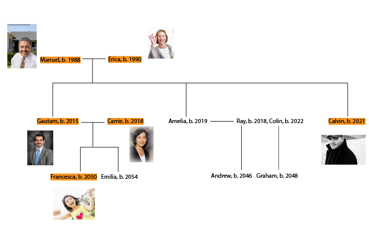

Three Generation Personas
Dan Tasse
The Shell Mountains scenario. An extension of the current status quo. Those with power tend to slowly gain more power, and authority becomes more concentrated in a few cities. Government creates more broad mandates than they did in the early 2000s. Social mobility is stifled, though the US government tries to create the illusion that society is more mobile than it is. Central planning leads the world to slowly transition to natural gas, then to renewable resources, before climate change gets too radically out of hand.
(work in progress)

The people in orange will be the focus of this project.
| Manuel | Erica | Gautam | Carrie | Calvin | Francesca | |
| Health | Aging well mostly. Deals with stress and mild depression. | Healthy, though years of little sleep have led to somewhat early aging. | Eats healthily thanks to Carrie. Very athletic. Starting to get joint injuries. | Somewhat healthy eater by choice. Vegetarian. | Risky. Former drug user, still not very healthy eater, irregular sleep | Asthma, and gene sequencing shows risks for chronic kidney disease, fine otherwise |
| Optimism | Low. Doesn't see things changing a lot. | High. Successful in business. Blind to some societal problems, though. | Low. Years of underemployment have worn on him. | High; sure that disenfranchised workers' outcomes can improve | High. Despite financial struggles, lives a mostly content life. | Medium; she's five years old. |
| Urban Mobility | Good. Self-driving car will continue to drive them. | Also good; shares self-driving car. They live in a walkable Cleveland neighborhood. | Limited. Neighborhood only served by occasional buses.Car cost has gone way up, can't afford it. | Also limited. Buses and bikes, but Cleveland's sprawl makes this difficult. | Good. St. Louis invested heavily in transit, so he can use their new rail. Going home to Cleveland to visit parents is difficult, though. | Limited due to parents. |
| Housing | Bought a nice house in Cleveland while prices were cheap. | Same as Manuel. | Rents a 2br duplex in Cleveland, concerned about neighborhood safety | Same as Gautam. Looking to move up but unable due to prices. | Rents an apartment. Would like to own, but can't get a mortgage. | Will soon have to share her bedroom with her new sister. Not happy about it. |
| Future Plans | Coast into retirement. Content, but not fulfilled. Midlife crisis may be imminent. | Financially set, but keeps working later because she's not sure how to keep up a fulfilling daily life after retiring. | Uncertain. This worries him. | Lacking technical skills, she's looking for ways to get a more professional job using her people-organizing skills. | Thinking about starting a musical neuro-enhancement business. | Difficult: parents optimistic but she doesn't have much chance of social mobility. |
{kind=link}
{kind=link}
{kind=link}
{kind=link}
{kind=link}